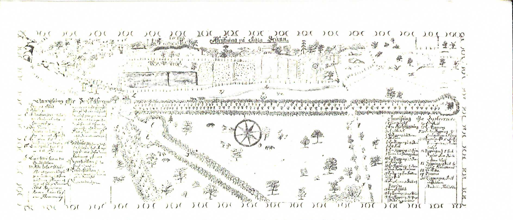
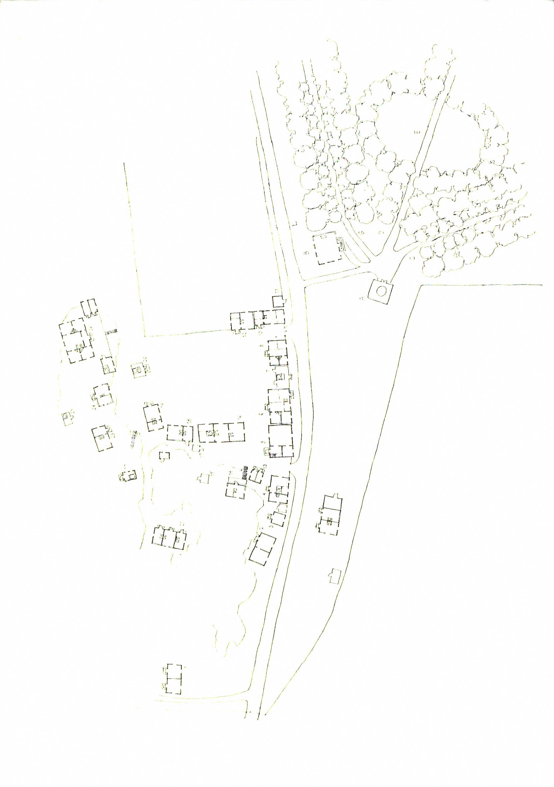
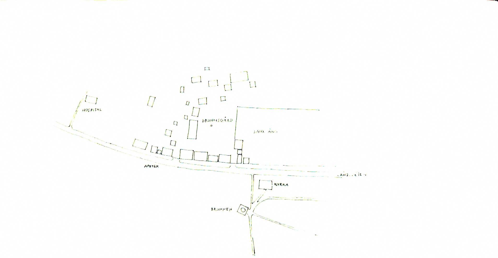
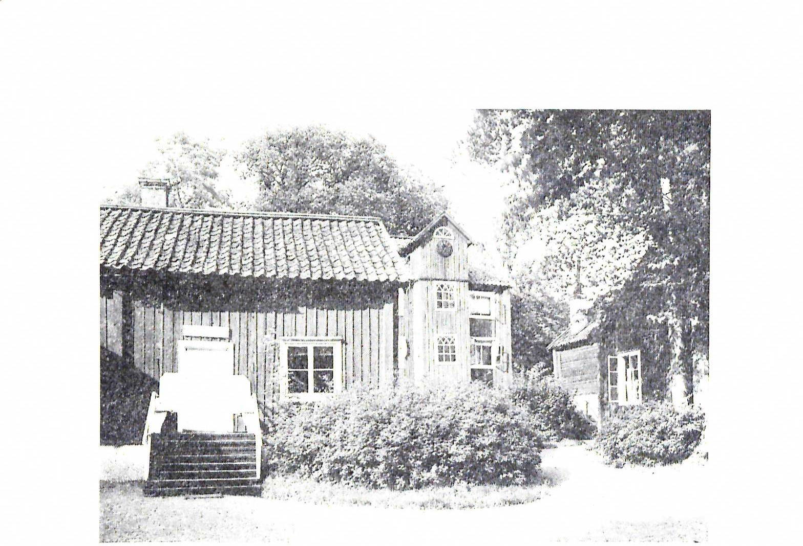

ATT ANLÄGGA EN
SURBRUNN
En studie kring Sätra brunns första utbyggnad
AV OVE HIDEMARK

ATT ANLÄGGA EN
SURBRUNN
En studie kring Sätra brunns första utbyggnad
AV OVE HIDEMARK
Särtryck ur Västmanlands Fornminnesförenings Årsskrift L 1972
VLT-press Västerås 1972
Att anlägga en surbrunn
En studie kring Sätra brunns första utbyggnad
Av OVE HIDEMARK
Källorna och landskapet
Den mycket gamla landsvägen mellan Västerås och Dalarna ut-
nyttjade på medeltida vis åssträckningarna i landskapet. I ter-
rängavsnittet mellan Badelundaåsens nordspets och sydspetsen av
Långhedens åssträckning när Svartåns vattenområde västerifrån
in och skapar ett sankt och flackt landskap. Vägens framkomlig-
het försvårades i forna tider av den dåliga markbeskaffenheten
och gällde i just denna passage för att vara mycket riskabel. De
med järn och koppar tungt lastade fororna grävde lätt ned sig i
risbäddarna och kavelbroarnas gungflyn.
När den gamla landsvägen — kopparvägen — lämnade den
sista udden av Badelundaåsen tvingades den att intill torpet. Bro-
arne söka sig över den nordligaste delen av Solingemyren innan
den på nytt kunde nå fast mark strax innan Sätra by. Det är i
detta vattensjuka landskapsavsnitt som Samuel Skragge 1700
upptäckte de hälsobringande källor, som skulle bli upphovet till
Sätra brunn. Samtliga källsprång, fem till antalet, rann upp ome-
delbart intill landsvägen på dess södra sida (bild 1).
"Thesse alle brunnar eller källor äro belägne straxt wid stora
landsvägen, som löper ifrån Wästerås til Fahlun, 3 mijhl ohnge-
fär ifrån Wästerås och 1 och en fierdedehls mijhl från Sahlber-
get, från hwilka städer man dageligen och stundeligen kan hafwa
tilförsel på allehanda nödvändigheter, särdeles ifrån then förra,
til hwilken man kan få 10 bud om dagen, om man will, med fohr-
bönder, som ther dag och natt förbijfahra med koppar, järn, span-
mål och andra persedlar, som gå upp och ifrån Fahlun och Bergs-
lagen . . . Ofwan för källorna på then sijdan som wetter moot
Sahlberget, äro många höga berg och bergskullar, som hela långa
stycket bortåth alt högre och högre stijga, nedan för them liggia
åthskilliga lustiga och angenähma ängiar, och kring om the sam-
ma så wäl som på alla sijdor om brunnarna finnas innom några
3
Bild I. Rekonstruktion av terrängen i Sätra före brunnens uppbyggnad. Lands-
vägen — omgiven av gärdesgårdar och avbruten av grindar — löper rakt
igenom terrängavsnittet. På dess norra sida ligger torpet Broarne och på dess
södra sida de observerade källsprången och den nordligaste utlöparen av So-
lingemyren. Rekonstruktionen utgår från ett flertal kartor från sent I600-tal.
musqueteskått åthskilliga byar och wälbygde gårdar, uthi hwilka
brunnsgästerna kunna inrymmas, til thes man med tiden får byg-
gia och laga andra begemligheter för them ..."1)
Beskrivningen är Skragges egen och skildrar situationen kring
källorna då brunnsrörelsen startar.
Vad upptäckten i själva verket gäller är naturligtvis vattnets
kvalitet ur medicinsk synpunkt, inte förekomsten av källsprången
som sådana. Dessa, i varje fall några av dem, har bevisligen varit
kända långt före Skragges ankomst. Den direkta anledningen till
Skragges analysprov är ryktet om källornas hjälpande kraft på
lagmannen i Norrbo härad, Per Gyllenhöök, vars sjuka arm an-
sågs botad efter behandlingen. Provinsialläkaren Samuel Skragge,
hängiven hydroterapien och erfaren brunnsläkare, beger sig vid
första tillfälle dit och låter inte möjligheten att etablera en sur-
brunn gå sig ur händerna. Det var allmogen som rekommende-
rade lagman Gyllenhöök att söka sig till källan. Sannolikt var
källan utnyttjad sedan urminnes tider.
Som provinsialläkare i Västmanland sedan 1685 borde Skragge
rimligen ha observerat källorna vid sina många resor i länet. De-
ras tydlighet och styrka är påfallande. Skragge skriver själv om
dem: "The äro på thet ena stället som ligger på Sätrans bys ägor
til antalet tree stycken springande ongefähr 3 qwarter ifrån hwar
andra, af hwilka then ena som närmast upp til landswägen uth-
flyter synes til smaken wara starkast hafwandes i sig ock så fast
flera ådrar än the andra them man til 10 a 12 kan räkna som med
4

Bild 2. Detalj ur kartkoncept från 1663 (Lantmäterikontoret i Västerås). Lant-
mäteriförrättningen avser en bestämning av Bennerstigens ägogränser, men vi-
sar även den s.k. Märphons kiälla intill landsvägen.
ett lustigt spelande sanden immerfort ifrån grunden upkasta li-
ka som en starkt kokande gryta sina bublor uphäfwer. Then and-
ra på högra sidan norr om then upwällande synes wara något swa-
gare och then tredie söder om then andra belägen tyckes wara
något grofware och icke så lefwande och subtil som the 2 förra.
Och som hon föhrer mehr ochra och schlich än the andra så kan
hon til badande bäst brukas."2)
Dessa kommentarer är dock inte den enda dokumentation som
tidigt kommit källorna till del. Ett äldre kartmaterial från 1600-
talets senare hälft, hittills obeaktat, ger tydliga anvisningar inte
bara om källornas läge utan också om dess benämning. Äldst är
ett koncept till en karta från 1663 (bild 2). Konceptet hänför sig
till inmätningar av Bennerstigens ägor och visar endast källans
läge som en märkvärdighet utanför arbetets omfattning. Om upp-
lysningen vidarebefordrats till någon slutgiltig karta är obekant.
Källans namn är här "Märphons kiälla", ett namn av oklar inne-
börd och med en stavning, som antyder en något vilsen latinise-
ring. Kanske är det en anmärkning av en lantmätare som försökt
översätta källa, kanske en sista kontakt med en benämning av en
medeltida källa, en kyrklig annektion av en hednisk källkult och
namngiven — en ren gissning — efter jungfru Maria.
5
Nästa dokument är en odaterad karta där källans läge och
kopparvägens sträckning är tydligt redovisade. Här är källan
namngiven "Märefors kiällan", klar svenska i sin helhet och fort-
farande med stavelsen "mär". Teoretiskt sett kan motsatsen ha
inträffat, att en lantmätare läst phons som fors och praktiskt
försvenskat namnet. Kartan är klart yngre än den föregående.
En karta från 1699, året för Per Gyllenhööks lyckosamma be-
sök, visar terrängavsnittet med torpen Broarne och Fängsbacken
namngivna, men saknar källmarkering.
Några av kartorna visar belägenheten av kopparvägen tydligt.
Ängar och myrmarker ansluter på båda sidor. Sätra by, några
hundra meter västerut längs vägen, markeras med sedvanliga hus-
symboler.
Hur namnet än tolkas, kvarstår bevisen för en klar tradition
av källan som känd och namngiven. Skragge uppfattade aldrig
egennamnet, annars kände vi kanske i Sverige bättre Märfors
hälsobrunn än Sätra.
Skragges fyndighet, men också respekt för den kristna tradi-
tionen, återförde källans namn till kristen symbolik: "man har
funnit skiäligt at efter som the igenom ett litet begrep äro 3 til
antalet kalla them HELGA TREFALDIGHETS KÄLLOR af
hwilkens nåd och wälsignelse the ock hafwa sin kraft och
werkan".3)
Namngivandet av själva källorna var raskt undanstökat. Mär-
phons källa tillmättes nu oegentligt förmågan att äga trefaldig-
hetsnattens kraft. Den rinner klart mot söder och ej mot norr som
sådana källor bör. Övriga källor benämndes Segerkällan efter det
nyss vunna slaget vid Narva, och Brudkällan efter det närbelägna
Brudberget, ett namn som dock inte förekommer på någon tidig
karta. Däremot kom själva brunnens namn att skapa vilsenhet
Långt in på 1700-talet. I Skragges skrifter kan den någon gång
benämnas Sätra hälsobrunn men vanligare är Kijhla brunn, med
sockennamnet Kila som utgångspunkt, ibland ersatt med Fläckebo
brunn efter grannsocknens namn. Brunnen karaktäriserades i bör-
jan som förlagd på gränsen mellan Kila och Fläckebo socknar.
Det är först inemot århundradets mitt som namnet stabiliseras till
Sätra Brunn.
Hur växte bebyggelsen fram kring den plats som källorna be-
stämde? Även här finns vissa dokument och spridda uppgifter
som tillsammans ger klarhet. Innan vi närmar oss dessa kan emel-
6
lertid en kort bakgrund av grundaren och patronus fundi, med.
dr., provincialläkaren, brunnsintendenten, apotekaren och livme-
dicus Samuel Skragge vara på sin plats.
Grundaren
Vid starten år 1700 av Sätra brunn är Skragge en erfaren
"wattuprofware" sedan 16 år. Hans nära vän Urban Hjärne gav
honom tidigt på 1680-talet intresset för vattnet som botande och
förebyggande behandlingsmedel. Det var helt i den anda som
samtiden omfattade och som utgick från tron på de fyra tempera-
menten: jord, luft, eld och vatten. Med Hjärnes "Then lilla wat-
tuprofwarn" av år 1683 på fickan utvecklas intresset till en ren
passion. Knappast någon resa gjordes utan att källsprång analy-
serades. Det var kanske inte enbart medlidande med en krasslig
mänsklighet, som styrde hans ambitioner — en känsla för lönsam
företagsamhet syns honom inte alldeles främmande.
Hans studieresor 1684 går till Holland och England där han
enligt egen utsago "med flijt bewistade och besökte alle der be-
kante suurbrunnar". Hemkommen utnämns han till provinciallä-
kare i Västmanland, startar apoteksrörelse i Nyköping samt upp-
täcker Wiksbergs hälsobrunn helt nära Södertälje. Den senare
slog inte särskilt väl ut. Från och med 1693 förestår han i stället
sommartid kurerna vid Medevi, samma år som Medevi får en av
Kungl. Majt. fastställd byggnadsplan. Det finns anledning att
fästa uppmärksamheten vid detta då sedermera utbyggnaden av
Sätra år 1700 tar sin början. Han får fyra år på sig att skapa
Sätra hälsobrunn, sitt livs ögonsten, innan han kallas att som
livmedicus följa Karl XII i det ryska fälttåget. Här lever han,
ömsom i kungens närhet, ömsom i malströmmen efter krigskata-
stroferna till dess hans okuvliga passion för att upptäcka och
nyttiggöra brunnar finner ny näring i utkanten av Lüneburg.
Här lyckas han under de sista åren av sitt liv — han dog 1718 —
skapa en brunnsverksamhet, som består ännu i dag.
Hans lycka är uppenbar när Sätravattnet vid analys visar bäs-
ta tänkbara värden. År 1701 undersöker även Hjärne vattnet och
finner att "desse vatten de Medewijske lijtet lära eftergifwa . . .
I baad hoppas jag at de mycket större Curer lära giöra än Mede-
wij . . .".4) Skragge förväntar sig följaktligen en stor framtid för
brunnen och köper omedelbart in marken i det närmaste terräng-
avsnittet i avsikt att snabbt uppföra de nödvändigaste byggna-
7
derna. Lika viktigt, som dessa medicinskt väl tillrättalagda förut-
sättningar, är propagandan utåt för att locka gäster och besökare.
Två skrifter ser trycket 1701 och 1703, och innehåller ett stort
antal beskrivningar över exempellöst lyckade kurer. I den senare
av skrifterna förekommer även upplysningen att Skragge "har til
then ändan intil källorna låtet byggia så varme huus och loge-
menter at han der uti moot kiöldens fara och intrång skal kunna
wara aldeles beskyddad och skadelös".5) Husens goda värme pri-
sas för att kunna hävda att brunnskuren även borde bedrivas
vintertid, en, såvitt det är bekant, unik tanke inom dåtidens be-
handlingskonst. Upplysningen är den första konkreta kommen-
taren rörande brunnens uppbyggnad. Första brunnsterminen var
1701. Husen bör således ha byggts 1702.
Detta var de första åtgärderna för att i det vattensjuka land-
skapet skapa en surbrunn med de bästa förutsättningar och en stor
förväntan på en givmild framtid.
Förebilder
Hur såg en gängse surbrunn ut vid den tiden, vad krävdes av
bekvämlighet och social eller materiell försörjning? Med andra
ord: vilka förebilder stod Skragge närmast? En högst normal sur-
brunns struktur och beståndsdelar kan beskrivas enligt följande.
Källan är helt naturligt utgångspunkten för planläggningen,
ett centrum för vattnets tillbedjan och nyttjande. Den kringgär-
das av en skyddsvall eller isättning av bräder till skydd för in-
fallande jord. Dessutom bör vattnet skyddas från solen för att
inte fördunsta samt skyddas mot regn för att inte utspädas och
således i båda fallen förlora i styrka och läkekraft. Ett brunns-
hus med tak och väggar som ger regnskydd och samtidigt en kylig
halvdager reses runt källan. I tidigare anläggningar utgöres
brunnshuset oftast av en rund eller mångkantig, tempelliknande
paviljong med tornlikt tak. Jämförelser i utlandet är 1600-talets
Bath eller Bad Pyrmont (bild 3), här i Sverige S:t Ragnhild i
Söderköping, enligt Suecia antiqua, eller det första brunnshuset i
Medevi.
I anslutning till brunnshuset arrangeras en promenad, antingen
i det fria under svalkande trädkronor eller i öppna halvskuggiga
loggior eller pelarhallar. Vattnets medicinska verkan på kroppen
ansågs stegrad genom en lagom, inte alltför häftig, kroppsrörelse
gärna i form av ett stilla flanerande längs gångar, som helt natur-
8

Bild 3, Detalj ur en teckning som beskriver Bad Pyrmont år 1698. O betecknar
brunnshuset och N promenadgången, H och M öppna bassänger. Intill prome-
nadvägen, vid I ligger 20 st hemlighus. K och Q betecknar marknadsstånd och
vid R utskänktes vin. S avser landsvägen från staden Lüde till byn Lissdorff.
Den senare betetecknad med V och T. I förgrunden ett schäferi och ett vatten-
drag. Bad Pyrmont var en av de mest berömda hälsobrunnarna i 1600-talets
Europa. Dess yttre omfattning och gestaltning tedde sig trots allt rätt blyg-
sam och visar här en miljö som i storlek och konstruktion står våra svenska
motsvarigheter, mycket nära.
ligt kantades av små hemlighus. Dygnskonsumtionen av vatten
var enorm.
Härnäst kommer en rad institutioner nödvändiga för gästernas
välfärd och trivsel: apotek, matsalar, bostäder, kyrka, fängelse,
stallar och vagnslider och även salutorg, det sistnämnda för för-
säljning av traktens småhantverk, matvaror, törstskapande små
skarpa kakor m.m. Till en brunn hörde också ett fattighus eller
hospital för de obemedlade, oftast planmässigt placerat åt sidan
utanför den centrala och karaktäristiska bebyggelsen. Den sociala
fördelningen undgick självklart inte en surbrunn med dess ekono-
miskt givna ambitioner på ståndsmässighet. Den snarare accentue-
rades genom den blygsamma storleken på brunnsmiljön.
9


Bild 4. Den äldsta kartan över Sätra brunn, sannolikt från 1721. Originalet i
U.U.B. Den egentliga brunnsbebyggelsen är redovisad i kartans övre vänstra
hörn och resten skildrar den gamla landsvägen och de vidlyftiga parkanlägg-
ningarna. Den sydligaste delen av parken, där alléstråken möts, är inte utritad
men angiven i den förklarande texten till läge och utformning. (Jmfr även
bild 16). Den formella trädgårdsanläggningen i kartans övre högra del är be-
lägen omedelbart intill torpet Broarne. Den förledande och charmfulla rittek-
niken uppvisar en mycket exakt återgivning av verkligheten; väglängder, vink-
lar och huslägen överensstämmer i detalj med var tids inmätningar.
ring till den seqvesterförklaring som brunnen utsatts för under
Skragges frånvaro.8) Den privata etableringen undgick självklart
allt beslag.
Det har i tidigare beskrivningar av Sätra brunn, främst Petrus
Tersmedens och Ruth Rosenius-Högmans, antydningsvis fram-
hållits vissa byggnader som brunnens äldsta och tillhörande det
första skedet av dess uppbyggnad. Detta gäller främst byggnader-
na kring brunnsgården och i synnerhet landsvägsbyggnaderna. En
jämförelse mellan syninstrumentet och kartan möjliggör en kontroll
och samtidigt en revision härav.
Vid första ögonkastet visar kartan att brunnens karaktär i
stort sett bevarats mycket väl intill våra dagar. Byggnadernas ka-
raktäristiska gruppering kring brunnsgården är redan för handen
1721 (bild 5). Anmärkningsvärt är att samtliga byggnader utan
undantag markerats som rödmålade, ett förhållande som jämfört
med den gängse grå bebyggelsen i övrigt i landskapet klart anger
pretantioner på ståndsmässighet eller krav på en stadsliknande
miljö.
Uppläggningen av planen tar i första hand fasta på topo-
11

mer för bad lämpade Segerkällan ca. 250 m österut från brunns-
gården placeras badstugan, frikopplad från all annan bebyggelse.
Syneinstrumentet behandlar endast 13 byggnader, varav 11
inom det angivna brunnsområdet. Kartan upptar 30 st. och inne-
håller även vissa uppenbara förändringar gentemot synen.
Översättningen av karta och syneinstrument redovisas i bil-
derna 6 och 7. Överensstämmelsen är påtaglig men skiljer sig
beträffande rummens antal. Rekonstruktionen siktar till en sam-
manjämkning av kartans situation som helhet och synens detalj-
uppgifter angående interiörerna. Tidsmässigt skulle rekonstruk-
tionen kunna placeras till omkring 1720.
Kartan benämner den öppna platsen brunnsgård. I dess mitt
står en rödmålad stolpe eller skampåle. Här härskar i brunnen det
av Kungl. Majt. 1707 för rikets surbrunnar fastställda brunns-
plakatet och som dess verkställare brunnsrätten. Gården förut-
sättes redan här utnyttjad som handelsplats eller salutorg, en
funktion som blir allt tydligare mot seklets senare år då rader av
bodar mellan byggnaderna förstärker gränsen mot omgivningen.
Dessa bodar kvarstod ännu i sen tid och finns t.o.m. fotografiskt
dokumenterade. Brunnsgården var en stor grusyta utan den nu-
tida trädplanteringen. Gården samlade husens entréer till sig och
var troligen platsen för tillfälligt parkerade ekipage och otåligt
väntande hästar. Utanför brusade, enligt dåtida begrepp, den liv-
liga trafiken till och från Dalarna.
Brunnsgården representerar här lika mycket den slutna bond-
gårdens tradition som det då moderna stadsplanetänkandet. Kvar-
teret i staden har sina entréer förlagda mot gården, är slutet mot
gatan undantaget vissa portförsedda prång mellan husen och
fungerar ofta som handelsplats. "Brunnskvarteret" innehåller här
dessutom ett torgs funktioner: officiell plats med entréer för herr-
skapen.
Om brunnsgården representerar kvarteret och torget samtidigt,
utbildas dock inte gatan som en normal dubbelsidig sådan. Längs
vägen ligger på dess norra sida en husrad som sträcker sig förbi
kvarterstorget. Beroende på vägens stora trafiktryck, men också
på den begränsade byggnadsmarken söder om landsvägen och ös-
ter om brunnsgården, fullföljs inte denna gatutanke.
Längs gatan ligger de funktioner som brunnsgästen, nyss ut-
kommen ur brunnshusets svalka, vill överblicka: apotek, kök,
matsal, läkarmottagning, kyrka, badhus m.m. Logement med eget
13



sobrunnen liggiande Plantzen, med åtskilliga wackra Aleer, skiöna
plantager, liufliga uti täta löf-lunden afdelte lekeplatser, behag-
lige stoder och Pyramider, angenäma wattensprång och grafwar,
så låta utzira, at en rättsint, som det skådar, måste tilstå, det na-
turen och konsten hafwa slutit, at denne plats måste wara och
blifwa en liuflig, behagelig och rolig Sommar och hälso-hemvist".
Den något omständliga beskrivningen är hämtad från P. Elfwings
propagandaskrift från 1708.9) Det var sannolikt en skönmålning
av en arbetsplats för en park i vardande. Parkens allésystem är
tänkta att sammanstråla utanför kartans gräns i en s.k. sjustjärna,
försedd med "stålta Pyramiden som med sin hwassa spets kan ho-
ta sielfwa tiden", enligt en strof från 1713. Alléerna avbrytes av
rondeller varav den närmast brunnshuset belägna på kartan kal-
las "en grön Parterre för dem som behaga dantza".
Parkens tillstånd var till en början uppenbart inte det bästa.
Kritik riktas 1718 mot brunnsmästaren, eller brunnsskänken, för
att han inte "höll alleerna reene, ej heller rundelen wijd macht,
icke heller conserverade buskarne och inga trään, uthan lät dem af
boskap nedtrampas".
Johan Casimir Fleming, som i olika perioder av sitt liv var as-
sessor, generaltullförvaltare och kammarråd, var en ständigt åter-
kommande brunnsgäst under åren 1705-1713. Av hans yrkesin-
riktningar att döma torde han knappast själv stå som parkens ut-
formare, men ambitionen till den sällsynt vidsträckta, för dåtiden
mycket moderna och tidsmedvetna anläggningen med över 500 m
långa alléstråk, måste vara hans egen. Tyvärr har parken i dag
stympats i sina mått av den nya landsvägen som brutalt skurit
av alléer och rondeller och avskilt sjustjärnan från brunnsom-
rådet.
Helt lösryckt ur promenadsynpunkt har intill det lilla torpet
Broarne förlagts en närmast renässansartad trädgård, kringgär-
dad av staket och försedd med prydliga korsade gångar och små
parterrer, ca 40X40 m i storlek. Motivet till denna kuriösa och
ålderdomliga lustgård är okänd.
Byggnaderna
Den relaterade beskrivningen av brunnen hämtar sitt material
främst från 1721 års karta. Syneinstrumentet av år 1716 beskri-
ver byggnaderna. Kartans detaljer av byggnaderna: fönster, dör-
rar, knutar, takformer m.m. kan jämföras med synens kommen-
17

A A:son Hülphers brunnsbeskrivning 1769). Ännu längre bort
ligger torpet Broarne och presidenten Fahlströms anläggningar.
Vilka av dessa byggnader består än i dag? Av husen längs ga-
tan, brunnshus, kyrka, o.s.v. finns ingenting kvar. Däremot torde
traktörns byggnad som en del av nuvarande köket, samt natur-
ligtvis Wallraves, Broarne och Fahlströms byggnader represente-
ra den äldsta brunnen än i dag. De är emellertid genom århund-
raden av reparationer och ombyggnader fattiga på spår från den
första tiden.
En inbördes datering av byggnaderna är omöjlig att göra. En-
dast vissa riktlinjer kan skönjas. Skragge skriver från vinterkvar-
teret i Rauritz i Tyskland 1704 att han i Sätra "giordt där stora
bekostningar med byggiande av kyrckia, hospital, logementer
m.m."10)
Elfwing, nästföljande brunnsintendent, anses ha byggt en kyrka
och ett fattighus. Vem som egentligen uppfört kyrkan må vara
osagt, en klocka finns dock med årtalet 1710. Det är inte osanno-
likt att Skragges insatser var av ytterst provisoriskt slag och
krävde rätt snar förnyelse. Uppgiften om ett fattighus kan möj-
ligen kopplas samman med upplysningen av Jacob Wolkers, en av
de privata bobyggarna. I en inlaga till Svea hovrätt 1719 skriver
han att "som jag och, så med Medewij som Kijla af egen bekost-
nad Hospitaler upbyggia låtit". Hospitalet är på kartan en bygg-
nad om två rum, en manlig och en kvinnlig avdelning. Mängden
bäddar, eller snarare antalet sängplatser, är tyvärr okänd. Bygg-
naden tycks ha saknat uppvärmningsmöjligheter.
Syneprotokollet antyder att vissa av byggnaderna är gamla.
Det gäller brunnsgårdens hörnbyggnad i sydöst samt ett par kök.
Om brunnshuset heter det att det är utfört av "gambla bräder och
mist förfallit". Kyrkan och fattigstugan är däremot i gott skick
och byggda av tillskjutna medel.
Andra brunnar, en jämförelse
Det kan vara av intresse att ett ögonblick dröja vid eventuella
förebilder bland de brunnsmiljöer, som samtiden erbjöd. Det är
framför allt Skragges egna resor under 1680-talet och i synnerhet
hans medverkan i Medevi på 1690-talet, som lockar till jämfö-
relser. Från och med 1693 är han i Medevi och troligen fram till
1701, undantaget några säsonger för resor till Norrland och Ryss-
land. Är 1701 kan han knappast vara i Medevi med hela sitt
19


Bild 9. Sätra brunn omkring 1720 enligt rekonstruktionen. Norr uppåt pa bilden.
byggelsen sluter sig mot yttervärlden. Den riktar sig med sina
entréer mot gatan och torget, avstänger brunnsområdet med gär-
desgårdar mot omgivningens ängar och med staket och port mot
farvägen. Torget är utbildat som centrum men ofullständigt kring-
byggt. Endast vissa entréer med grindar mellan husen mynnar
mot brunnsparken.
Likheterna med Sätra är uppenbara (bild 9). För båda brunnar-
na gäller att i husraden mot parken förläggs brunnens institutio-
ner: doktorsmottagning, apotek, kyrka, insprängda däremellan
bostäder för brunnsgäster. Torget samlar entréerna till sig och i
mittpunkten står en stolpe. Till brunnstorget och den inre miljön
leder grindar och portar. Brunnsparken och de skuggande prome-
naderna ligger utanför. Även hospitalet placeras avskilt.
Medevi har en påtagligt fastare, mer stadslik plantanke än
Sätra. Vissa uppgifter tyder dock på att den äldsta bebyggelsen
i Medevi legat mitt för torget och att gatans stadsmässiga karak-
tär möjligen är en kompletterande utbyggnad under 1690-talet.
Det är ju 1693 som stadsplanen fastställs och således behovet av
en definition av utbyggnadsriktningarna blir nödvändig. Det pri-
mära skulle således ha varit institutionsraden mot parken och
torgplatsen innanför, snarlikt Sätra. Man skulle här kunna tala
om en prototyp för dessa brunnar, som utvecklats olika beroende
på skillnader i de yttre förutsättningarna: allfarvägens läge och
21


Bild 10. Brunnsgårdskvarteret sett från sydost. Foto från 1930-talet, Nordiska
Museet. Närmast "Landshövdingen" och längre bort längs landsvägen de östra
och västra landsvägsbyggnaderna. I fonden en tvåvåningsbyggnad på samma
plats som den första bebyggelsens matsal.

Bild 11. Brunnshuset från 1741. Foto Nordiska Museet.
23


Bild. 12. Apoteket med Klockhuset i bakgrunden.
sering av bostäderna.
Olof Gran anmärker i sin beskrivning av Västmanland 1754
att Kalsenius "bygde wackert up denna orten med många hus".
Kalsenius siktar betydligt högre än sina föregångare. Utöver
komfort och byggnadernas underhåll söker han sig även mot den
stora och erkända arkitekturen. Då Serafimerorden 1749 besöker
brunnen diskuteras Hårleman som brunnens arkitekt "på det icke
allenast regulariteten kunde blifwa observerad, utan äfw en Bygg-
naderne på det becjwämligaste blifwa inrättade". Som en ange-
lägen uppgift framhölls en ny kyrka, men förslaget ledde tyvärr
inte till någon åtgärd.
Den byggnad som däremot i detalj framträder i protokollet ef-
ter nämnda ordens besök är fattighuset, nyligen uppbyggt och
iordningställt av Kalsenius. Det bestod av två rum, det ena för
män med 14 bäddar det andra för kvinnor med 10 bäddar. An-
talet väggfasta sängar var 7 för männen och 5 för kvinnorna. To-
talt kunde byggnaden ta emot 24 personer, vars ålder måste ligga
mellan 24 och 30 år. Protokollet innehåller också en vänlig på-
minnelse om att sängarna måtte f ö rses med madrasser, gärna stop-
pade med ormbunkar och med hölje av buldan. Trängseln i säng-
arna var inte bara de mycket fattigas lott. För enkelt folk,
25
Räkenskaperna ger också en fast datering av vissa ny uppförda
byggnader. Sålunda tillkommer mellan Landshövdingen och Riks-
rådet 1784 Nya matsalen, nuvarande Kalseniussalen, på plat-
sen för två små gemensamhetskök, som tillhört nämnda hus. Det-
ta matsalsbygge hade dock föregåtts av ett provisorium i nuva-
rande Gamla kontorets västra del, inrett till matsal 1782. Det
delade då utrymme: i huset med apoteket. Även brunnssalen ut-
nyttjades under en period som matsal. Dåvarande bostaden för
brunnsmästaren, d.v.s. nuvarande apoteket, upptimrades från
grunden 1778. Sannolikt utnyttjades grundläggningen från den
föregående byggnaden, bergsrådet Lübeckers hus, som kan iakttas
på 1721 års karta. De båda byggnaderna företer mycket stora
likheter i storlek, planlösning och fönstersättning.
En av brunnens stora män var Abraham A:son Hülphers (1734
—97), brunnens första hävdatecknare år 1769 i ett Fägne-tal till
konung Adolph Fredriks höga namnsdag. Han var också förteck-
naren av alla i Sverige upptagna mineralbrunnar, alla i Sverige
kända orgelverk samt svenska städer och landskap. Varje som-
mar mellan åren 1765 och 1797 var han en trogen brunnsgäst i
Sätra, sannolikt redan som ung då hans fars namn förekommer
i 1753 års gästförteckning. Tydligen var han också så etablerad
i brunnssällskapet att han kunde återkomma till samma byggnad
år efter år, till slut kallad Hülphers byggnad. Det rör sig emeller-
tid här om två hus, ett äldre, numera försvunnet, hus och ett
yngre, som år 1771 benämns nya Hülpherska byggningen och så-
ledes bör vara uppfört något av de sista åren på 1760-talet. Detta
är samma hus som nuvarande Berget, ett namn som det får strax
efter Hülphers död 1797. Det äldre huset, som låg mellan Berget
och Klockhuset, kan möjligen ha varit samma hus, som på 1721
års karta tillhört häradshövding von Bysing. Rivningen av detta
bör ha skett omkring 1800. Det omnämns i 1796 års förteckning
men saknas i 1806 års syneprotokoll.
Här, i nuvarande Berget, får vi alltså tänka oss den flitige råd-
mannen, sommartid sysselsatt med att skriva ned och korrektur-
läsa sina gigantiska och metodiska undersökningar eller planläg-
gande nya insamlingsäventyr, avskild från den brokiga brunns-
gårdsmiljön men med full kontroll över händelserna genom bygg-
nadens utsikt och höga läge.
Möjligheterna att ta emot brunnsgästerna blev hårt ansträngda
under senare delen av 1770-talet. Brunnen hade då ett stabilt gott
27